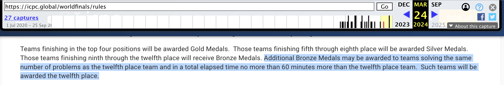

47届WF，我们队（渡渡鸟幼儿园）来不及调试K题，最后距拿牌差40分钟罚时遗憾离场。从埃及回来之后，我一直后劲很大。虽然一直是抱着老年诈尸选手弃疗的心态去的；虽然场上发挥已经很满意了，失误已经出乎意料地少了；虽然说“菜就多练”，输了的队永远能找到无数个借口，可是最后离拿牌只差一点点，我还是会幻想着赛前多训几场、队友早来两天、赛时状态再更好一点点，是否结局就会不同。
没想到，这回我们真的是撞大运了。由于疑似触发了铜牌增发规则和主办方的怜悯之心，主办方为我们解锁了隐藏结局——在48届WF现场阿斯塔纳为我们补发了铜牌。
47th World Finals Luxor
（本来作为输了的队，这部分训练经验只打算总结一下写给未来的自己了。但既然给补发牌了，还是大言不惭地给发出来了。如果这次资源极度有限条件下的极限训练经历能对别人有帮助的话就再好不过了）
学到的道理TLDR：训WF需要fit正确的distribution——训往年WF题，加训屎题，读别人最短代码的实现，学习如何简化代码，重点提高代码能力。以及卡在中后期需要多步观察的题时，让队友也来一起观察讨论。
由于我们这次是大四打的区域赛，受疫情推迟，真正比WF已经是毕业后了。而我们队一人美博一人美硕一人打工，赛前三人三地各忙各的，训练时间极其稀少，甚至加上中美时区不同，连把人凑到一起训练都困难。赛前一个月好不容易凑齐人VP了下EC Final，但退役太久没训练，不出意外地爬了。提高自己水平，任重道远啊。。感觉队友好像也失去了信心，更没人愿意训练了。（甚至下一次正式组队训练已经是WF热身赛了）
我作为只需要每天固定时间上班的打工人，没有找工、学术压力，竟然是最闲的。请教了上交 tbr，我了解到WF题的分布与区域赛很不同，需要加训屎题（即思维难度相对没那么高，而代码实现复杂的题）。而队里我并不是主力写代码的选手，更是成为了最弱。但我要加训，争取不当瓶颈！算了下账发现之后天天都做真题都做不完了，训高考都要五年高考三年模拟，in sample的数据没训完肯定不行。于是我开始全力做WF往年题来个人训练。
做了点题后，我发现这比赛签到和中期题大部分看一会儿就能有一定观察；观察足够久，思维不卡壳，基本都能彻底会，而把所有签到和中期题都AC了就有牌（或rank13）了。但想会了和代码AC之间有着巨大的gap，即使简单题有时也会有点实现难度。2019五个最签到除去一个板题外，我刚训时每题都均匀地花了高达一小时。而非签到题似乎思维能力还在，想久一会儿还是能一步一步找到各步骤的观察，不过由我来实现就会要更久了。2020仅1ac的题是简单线性代数，我很快口胡出做法了，可是不擅长写代码，实现出来竟花了两小时。于是这一个月我周内晚上和周末狂训写代码。后面几天发现时间更不够用了。。只得跳过自己写的步骤，口胡完稍微多口胡一会儿实现方式，直接读题解了。。
转眼间就要出发去比赛了，可是我往年题都还没做完，非常underfit。如果就凭我这代码能力，感觉比赛要完蛋了，我心里想。飞开罗的飞机上我继续口胡没做的往年题，和ddd（onsite coach）确认了做法和坑点，并请教了他们当时的策略和问题。发现远古时期还考我准备quant面试时做的结论题，还没啥人ac，大为震撼。飞卢克索的飞机上，感觉都是ICPC选手，和坐左边的说英语选手交谈了下才知道这居然是47届MIT的选手。我说你们要赢了，他说46届邓老师队才要赢，给我指了anton坐在我左边的左边。我无尽orz。正好天亮了，看到飞机窗外，有种非常抽象的感觉，才意识到自己居然来到了非洲。尼罗河旁边是城市，而城市远处就是一望无际的撒哈拉沙漠。
到了埃及，第一天队友还没来，我与ddd两个人扛了六份比赛物资，锻炼了身体。第二天队友陆续来了，于是终于开始了紧张地加训。除了excursion和ICPC Challenge还是去了之外，到正赛前的所有其他时间基本都用来训练了。由于目的是为了每个人水平的复健，考虑到时间严重不足，我们也没有打模拟赛，而是一起讨论一些新题，以及互相讲一些各自做过的题，以及实现一部分题。和队友训练，我发现队友还是无比强大的！队友也很会训练，训练效率一天顶自己好多天了！看着往年的榜，目标只是拿牌的话，好像只需要把签到题都做了，然后再尽量做一点非签到题？有一种很魔怔的我们也可以的感觉。短短几天，我学到了很多自己训时没有意识到的道理，包括：
一方面，队友nocriz教了我，训代码能力很有帮助的一个方法是看最短代码，学习降低编程复杂度。有时写之前对题目多做一些观察，能大大简化代码难度。又有时，别人对于算法可能有很简洁的实现思路。而如果题目自己写好久，AC后却都不知道是自己写复杂了，就少学到了很多简化代码的技巧。我们口胡题目后从qoj的最短代码中学到了不少令人瞠目结舌的trick，例如记下dfs序模拟dfs以减小dfs代码复杂度和卡常等等（很古早OI风格的技巧？）。
另一方面，做非签到题时，队伍中大家的观察能力常常能互补，人人都看一眼很能避免思维卡壳。我们口胡时经常出现这种情形：一个题有若干个观察，我把对我简单的观察找到了，然后就不会了，思维被阻塞；而队友一接手就发现了许多对他显然的观察。反复几轮，可能题就会做了。正如邓老师文章（字字珠玑，推荐阅读）所说：
观察是一件非常长尾的事。甲一下注意到的“不妨设”，乙想到宇宙边荒也未必能发现。这并非水平问题，而更取决于风格和直觉。每个人有不同的第一感。
为了处理这种长尾性，我们的思路是：
除了签到题，尽量每个人都看，并留下自己一眼可见的观察。
队友们的代码能力是依然强悍的，训练的方法论更是无比务实、切中要害的。短短几天，nocriz已经无比现役，可以表演半小时AC中档题了，让我看到了巨大希望。和队友欢乐做题、吹水，仿佛又回到了大二最现役时的快乐生活，不禁感叹we’re so back。但短短几天的高效训练也只是刚刚进入状态，树立了信心，离fit整个distribution还有不少距离。我多希望能早点这样进入状态，多训练训练啊！可是这就是人生。WF热身赛的题目是往年原题，而我们甚至很多都没见过（另一个角度说，这样着实起到了很好的热身效果。B题那道亏钱离场有rebate的游戏，在当年也是没啥人AC的题，题目和做法都令我印象特别深刻，热身赛结束后场外想明白了，起到了良好的训练效果。感觉也可以收录quant绿皮书经典了）
就这样，我们走上了正赛赛场。正赛的详细总结见nocriz的博客。刚开场一会儿我特别降智，签到题也不会做，害得nocriz又写代码又想签到题。而到做后面题的时候智商逐渐上线，成功应用了邓老师文章的策略与队友合作切了一些题，并让代码能力变得现役的队友们进行了实现。最后我们除了三分套三分题变量名打错WA了两次，费了不少前期时间，成为了最大遗憾之外，别的题都顺利地全部一发通过了。可惜K最后没来得及调通。在埃及神庙的颁奖晚宴上，知道自己已经没戏了，看着别人在领奖，魔怔的感觉更强烈了。
比赛之前我们训练了一场，每个人又做了若干个题。比赛之后我们各奔东西，继续尝试混混人生。
当时我的总结：
差40分罚时没拿牌。但悟了挺多道理：
- 算法竞赛，无比残酷。赛前就预感得拿（WF没牌队伍只按题数排名规则下）rank13了，但离多过一个题只差一点点、因为前期失误输罚时，真的只是rk13时，就觉得离拿牌这么近无比可惜。果然只有赢了或发挥出高出自己平均水平3标准差的队，才能满意。
- 在毕业后时间资源极其有限的情况下训wf的正确方式：认识到wf题与区域赛题distribution的不同，fit正确的distribution——重视简化代码复杂度的能力。拿往年题狂训，看题，做题，看题解，看最短代码。重点是学习最短代码是如何简化实现难度的
- 还是和队友在一起的时候好啊，无比欢乐
这次也是和本科、和算法竞赛彻底道别了。去wf，从现实世界抽离了出来，很有种找回了之前魔怔的感觉。（虽然马上又要回去，各奔东西了）
隐藏结局 & WF Astana
本来以为 ICPC 生涯到此结束了，魔怔了一阵子之后，回来也逐渐回到了日常工作。8月31号，ICPC组委会的人给我们队和教练发了神秘邮件，说“随着阿斯塔纳WF的临近，我们正在结束上个赛季，并正在与选定的队伍、教练和RCD进行一系列视频通话”，和我们约了9月5号晚上聊天。难道是要采访我们，录制纪录片《没赢的队伍到底有多少理由》？我们也没细想就答应了。
9月5号，外面是刮台风前最后的宁静，我也看到了有史以来最美的晚霞。会议前10分钟，我收到了日历提醒，才突然想起来视频通话的事，赶紧加入了会议。教练也加入了。没想到会议上 Bill Poucher 教授和 CJ Hwang 都陆续进场了，顿时感觉事情不简单了。进了会议他们恭喜我们在 WF 的优秀表现，可是会议究竟是干什么的呢？这时，Bill 说 ICPC 秉承以人为本的理念，打算给我们补发 WF 铜牌，让我们穿上 WF Luxor 的衣服下下周来阿斯塔纳WF上领奖。我直接呆住了，怎么可能来给我们补发牌了？难道WF之后要大放水了？简直 too good to be true 了。当时太震惊了，恍惚之中，会议结束了，我都没想到仔细问问这是为什么。
可是究竟为什么会轮到给我们补发牌呢？会后我们又仔细研读了规则，发现埃及赛前的规则里（web archive 2024年3月版），居然还真明文写着 “与第12名同题数、罚时相差不超过60的队伍有可能被授予额外的铜牌”的字样。有可能 ICPC 从没想到会有高达四个队满足这条增发规则？结合推特上，Universidad de Buenos Aires - FCEN (rank 13学校)的人好像说联系了 ICPC 组委会讨论了这个规则想争取个铜牌，有可能 ICPC 委员会也顺便发现我们也恰好满足要求，给我们也整了个铜牌？
在阿斯塔纳WF现场上，Bill 说这届起将取消这个规则，不再会增发铜牌了，而是执行 Honors Program。有可能因为这次被我们钻了空子，直接增发了四个，所以之后要严格了？这么看我们瞬间反转成了运气最好、regret最小的队——成为了增发铜牌的最后一届的铜牌最后一名。并且即使当时K过了，也只是rank 10，离银牌还有不小的罚时距离，并不能变成银牌。

于是我们获得了以ICPC Guest的身份来阿斯塔纳旅游的机会，只可惜nocriz由于签证问题无法参与。ICPC在热身赛结束后给我们颁发了铜牌。WF Dhaka没去成，但是换了个身份来了阿斯塔纳，也算是打满了两届WF吧！
我们顺便也在阿斯塔纳转了转，阿斯塔纳很现代很新，各种店都特别大，非常气派，装修很有特色。连各种连锁快餐、健身房都是一整栋楼，很土豪的感觉，可价格也不贵。服务很好，对中国人非常友好，与埃及各种one dollar骗局形成了鲜明对比。Yandex go也很好用。阿斯塔纳的食物也很符合北方人口味，马肉料理、手抓饭、大锅羊肉都很好吃，还吃到了非常中式的土豆牛肉、小油条、炸茄子、羊肉汤、炒拉条。不过标着马奶、骆驼奶的饮料本质是发酵饮品，当地人是当酒喝的，我喝不惯。除了气候上冷了点、风很大和比较干燥之外，简直完美。
ICPC 总结
大学的四年：
2019 - 2020：2019.6有幸被队友挑上，打了陕西省赛，至此组了队。我们从升大一的暑假开始利用一切时间训练，训练赛表现似乎还可以，CCPC 哈尔滨首战就发挥不错，拿了 rank 3。但之后 ICPC 南昌区域赛水平不济、沈阳遇见假题、EC Final 做不出中期题，最终没能出线。于是继续狂训，冲 45th WF。当时还有线下ptz营（可惜当时我由于一些原因没去成TAT）、字节营等不错的训练营，还有opentrains可以做往年ptz，做了各种好题。
2020 - 2021：好像水平还是显著提高了，打两场 CCPC ，都有遗憾，却还是分别拿了 rank 2 和 4。打 ICPC 上海前直接翘了大物期中考试和少年班成人礼来加训，结果第二天直接赢了。WF 由于疫情遥遥无期，而我们队也非常不魔怔于算法竞赛，于是都去申请大三一整年交换 & 尝试搞科研去了，争取申个好学校 CS PhD，算法竞赛就宣告“脱水”了，等到WF要来的时候再训训。
（一个很乐的小插曲是2021退役后的 CCPC Final，在北京的度假村里线下举办，我们抱着旅游的心态过去玩，把队名改成了“差不多得了”。没想到题是叉姐出的，特别符合我们口味，最后还拿了个校排rank 3混了个奖杯回来。然而队友以为必然会爬，颁奖前就跑了，于是只有我去领杯。颁奖时大屏幕上写着《西安交通大学 差不多得了》非常搞笑）
2021 - 2022：我们分别去了美国、英国交换一年，没碰算法竞赛。
2022 - 2023：WF20（45th WF）终于要办了。我们全队都在校，这是一个训练的绝佳时期，可是当时正是国内疫情管控最严格的时候，学校沉迷封校，死活不批！！！（而我们大三出国交换都批了的，回来还做双核酸+隔离了7+7）。不过鉴于我们还在校，我们还是报名了这一年的区域赛，打算再试着搞个WF出线名额。消失一年再打区域赛，有一种“少小离家老大回”的感觉，现役选手已经不认识了。而再打WF，都要毕业后了，可预见地很难抽出时间一起训练，没法打得更好了。好消息是，虽然这一年区域赛没太有压力地在电竞酒店随缘打，虽然出锅不断，却拿了南京rk4、香港rk2，没费太大力气出了线。
2023 - 2024：正如上文所述，WF22（47th）前我们挤出极少的时间复健了一下，最终获得了rk16。而恰好碰到主办方好心，给我们补发了铜牌。
疫情带来的各种延期举办似乎让ICPC WF一定程度上变成了比谁更晚退役的游戏。我们队作为一个很不魔怔的队伍，似乎在20年上海站之后就早早地止盈离场了，从此把优化毕业出路作为更高优先级。而之后反复复活，不同阶段打ICPC，都让我对ICPC有新的体会。大一大二最现役时的无比热爱、风华正茂，在之后却变成了差不多得了。而大四重新拾起ICPC时，参加ICPC香港站（尽管我由于一些决策失误，没能去香港线下）带来了一系列连锁反应，彻底改变了我的世界线。工作后再训WF，我短暂地从现实中抽离了出来，重新回归纯粹，找回了打ICPC最开始的魔怔与快乐。
总结下来，ACMKeHaoWanLe！尤其是各种线下活动，能带来很意想不到的故事和难忘的记忆。我ICPC生涯中最遗憾没线下参加的是20年寒假的ptz营、22年WF Dhaka和23年的香港站。今后我也要提高自己的决策能力，避免更多自己选择带来的遗憾。继续尝试混混人生！